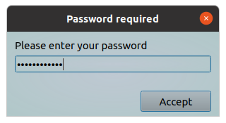
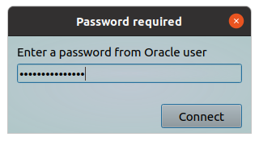
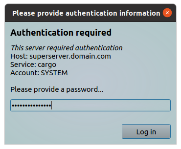

This tool allow you to request a passwords.
You can specify a message text to clarify you request for user.
The inputted value will return back to requesting program.
All parameters should be provided via command line.
Options:
| Short | Long | Description |
|---|---|---|
| -h | --help | Will show help and exit |
| -m | --message "Clarifying text" | A text message, it should clarify you request. You can use HTML markups for better view |
| -t | --dtitle "New dialog title" | A text string which will show in dialog header |
| -b | --btntext "New btn label" | This text will show onto "Accept" button, i.e. you can rename this button |
| -x | --sizex window_width | This parameter allow you to customize window width (default 300 pixels, minimum 300) |
| -y | --sizey window_height | This parameter allow you to customize window height (default 120 pixels, minimum 120) |
Examples:
Simple query password
#!/bin/bash
# some actions here
key=$(ytools-query-password)
echo "You printed the following key: " ${key}
As a result following window will appear:

Query password for specified user
We are changing text to clarify our request and rename "Accept" button.
#!/bin/bash
# some actions here
key=$(ytools-query-password --message "Enter a password from Oracle user" --btntext "Connect")
echo "You printed the following key: " ${key}
# Connect with this username and password
As a result following window will appear:

Advanced using
In this example we provide additional information about connection parameters. We are using HTML markup language to improve out text request. Also we changing window size, dialog title and "Accept" button text for better view.
#!/bin/bash
# some actions here
key=$(ytools-query-password -x 350 -y 250 -t "Please provide authentication information" -m "<h3>Authentication required</h3><i>This server required authentication</i><br>Host: superserver.domain.com<br>Service: cargo<br>Account: SYSTEM<br><br>Please provide a password..." --btntext "Log in" )
echo "You printed the following key: " ${key}
# Connect with this username and password
As a result following windows will appear:

Show help
This command will show a help message.
ytools-query-password --help
As a result following information will shown:
*** query-password - a simple program which allow you to request a passwords. *** You can specify a message text to clarify you request for user. The inputed value will returned back to requesting program. Usage: ./query-password [options] -h, --help Display this help and exit. -m, --message "Clarifying text" Text string which will show in dialog (default "Please enter your password"). Please use it for clarifying you request. You can use HTML markup language for better view. -t, --dtitle "New dialog title" This text will show in dialog header (default "Password required"). -b, --btntext "New btn label" Accept button will labeled with this text (default "Accept"). -x, --sizex window_width This parameter allow you to customize window width (default 300 pixels, minimum 300). -y, --sizey window_height This parameter allow you to customize window height (default 120 pixels, minimum 120).